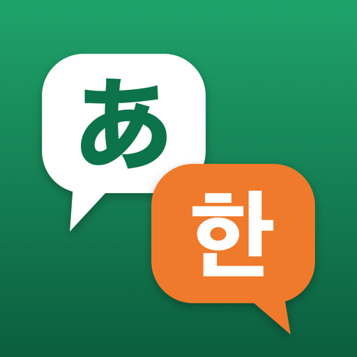

TapTalk 韓国語
サポート / Support
日本語
TapTalk 韓国語 は、韓国語を話せなくても、旅行先でタップするだけでやり取りできるiPhone用の会話アプリです。日本語で質問を選び、相手の方には韓国語の選択肢をタップして答えてもらいます。買い物・飲食店・ホテル・移動の質問に対応し、オフラインで使えます。
お問い合わせ
ご質問、不具合のご報告、ご要望は、メールでお送りください。お使いのiPhoneの機種とiOSのバージョンを書き添えていただけると助かります。
大切なお知らせ
このアプリは、旅行中の簡単なやり取りを手助けする道具です。相手の回答や表示された翻訳は、安全や正確さを保証するものではありません。アレルギー、食事の制限、体調、薬、緊急の場面では、このアプリだけで判断せず、書面・専門家・公的な窓口で必ず確かめてください。
よくある質問
フルパックを購入したのに、錠のついた質問が使えません。
ホームの「フルパック・購入を復元」を開き、「購入を復元」をタップしてください。購入時と同じApple Accountでサインインしている必要があります。
音声が出ません。
質問の音声はアプリに入っているので、iPhoneに韓国語の声を追加しなくても、オフラインで鳴ります。iPhoneの音量ボタンで音量を上げてください。Bluetoothのイヤホンやスピーカーにつながっていると、そちらから音が出ます。それでも鳴らないときは、アプリをいったん終了してから開き直してください。音声が出なくても、文字で会話できます。自動で鳴らすかどうかと速さは、アプリの「音声設定」で変えられます。なお、音声はAIの音声合成（Azure AI Speech）で作ったもので、韓国語の文章と音声は、母語とする人による確認がまだ済んでいません。
オフラインで使えますか。
質問・回答・音声はアプリに入っているので、機内モードでも使えます。購入と購入の復元には通信が必要です。
金額を日本円で知りたい。
ホームの「日本円の目安（レートの設定）」で、1ウォンが約何円かを入れてください。相手が金額を数字で答えたとき、結果の画面に日本円の目安が出ます。アプリはレートを自動で取得しないので、両替所や銀行のアプリなどで確かめた、その日のおおよそのレートを入れてください。実際の支払い額とは異なります。「あなたの通貨」で、円以外の通貨も選べます。
無料で使える範囲は。
基本的な会話と、買い物・飲食店のよく使う質問が無料です。フルパック（買い切り）で、ホテル・移動を含むすべての質問が使えます。サブスクリプションではありません。
English
TapTalk Korean (TapTalk 韓国語) is an iPhone conversation app for travelers in South Korea who speak English or Japanese. You choose a question in your language, and the other person answers by tapping a choice in Korean. It covers shopping, restaurants, hotels, and transport, and works offline.
Contact
For questions, bug reports, or requests, please email us. It helps if you include your iPhone model and iOS version.
Important
This app is a tool to help with simple conversations while traveling. The other person's answers and the translations shown are not a guarantee of safety or accuracy. For allergies, dietary restrictions, health, medicine, or emergencies, do not rely on this app alone; always confirm in writing, with a professional, or with an official service.
Frequently asked questions
I bought the Full Pack, but locked questions are still locked.
On the home screen, open "Full Pack / Restore purchase" and tap "Restore purchase". You need to be signed in with the same Apple Account you used to buy it.
There is no sound.
The question audio is built into the app, so it plays offline without adding a Korean voice to your iPhone. Turn the volume up with the iPhone's volume buttons. If Bluetooth earphones or a speaker are connected, the sound comes from them. If it still does not play, quit the app and open it again. You can still converse with text without audio. You can change autoplay and speed in the app's audio settings. The audio is AI-generated speech made with Azure AI Speech, and the Korean text and audio have not yet been checked by native speakers.
Does it work offline?
Yes. Questions, answers, and audio are built into the app, so it works in Airplane Mode. Purchasing and restoring require a connection.
Can I see amounts in my own currency?
On the home screen, open the currency estimate setting, choose your currency, and enter roughly how much one Korean won is worth in it. When the other person answers an amount with numbers, the result screen shows an estimate in your currency. The app does not fetch exchange rates, so enter the day's approximate rate from a currency exchange or your bank's app. The estimate may differ from the actual amount you pay.
What is free?
Basic conversation and common shopping and restaurant questions are free. The Full Pack, a one-time purchase, unlocks all questions, including hotels and transport. It is not a subscription.